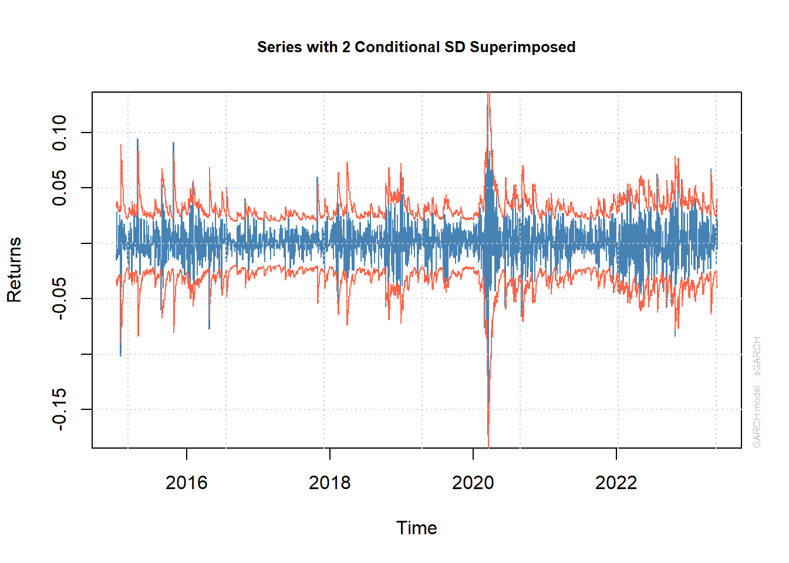
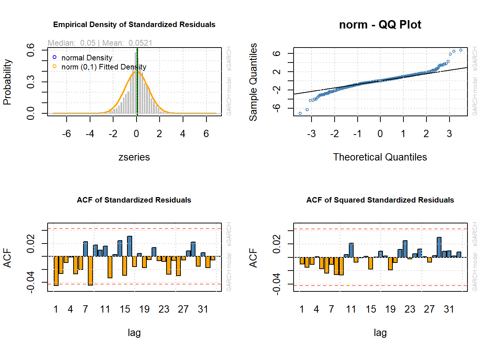
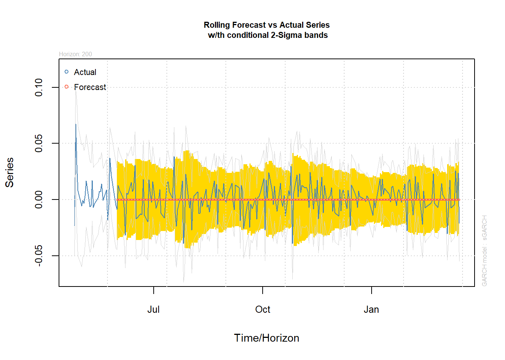
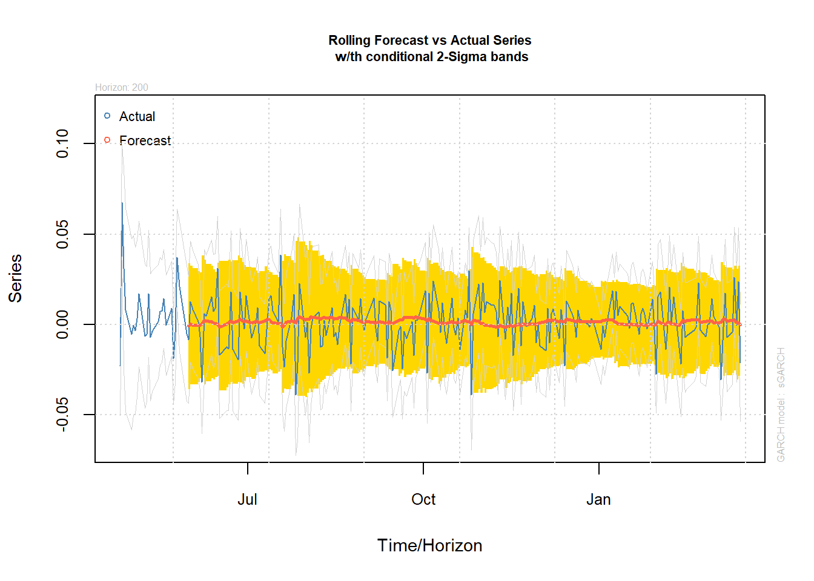

install.packages("rugarch")
library(rugarch)Forecasting volatility in R
The fable package that we are using for everything else does not cover volatility modeling. We could maybe trick it, by using the ARMA representation of a GARCH model and back-transforming the estimates to the GARCH parameters, but this is not very convenient. It is also useful for you as students to see something other than the tidy packages.
We use a package called rugarch for fitting and forecasting GARCH models. You find the vignette Introduction to the rugarch package here. Install and load the package.
We continue with the Microsoft closing price returns as example. We cannot use the tsibble structure with the functions from this packages, so we will transform the Microsoft data to an xts object. This is also a time series object. We leave 200 observations for testing.
MSFT <- MSFT %>% filter(!is.na(return)) # Removing NAs
msft <- xts(MSFT$return, # values of time series
order.by = MSFT$date) # dates of time series
train <- msft[1:(length(msft)-200)]We start by specifying the model. In this case, we want to fit a GARCH(1,1) without mean. We use a Gaussian assumption on the distribution of \varepsilon_t. We do not want to use a model for the mean, and therefore explicitly state that the arma-order is (0,0).
model <- ugarchspec(variance.model = list(model = "sGARCH",
garchOrder = c(1,1)),
mean.model = list(armaOrder = c(0,0), include.mean = FALSE),
distribution.model = "norm")Once we have the specification ready, we can fit the model, using the ugarchfit function. This need a model spec and the data.
fit <- ugarchfit(spec = model,
data = train)Let’s look at the model output:
print(fit)
*---------------------------------*
* GARCH Model Fit *
*---------------------------------*
Conditional Variance Dynamics
-----------------------------------
GARCH Model : sGARCH(1,1)
Mean Model : ARFIMA(0,0,0)
Distribution : norm
Optimal Parameters
------------------------------------
Estimate Std. Error t value Pr(>|t|)
omega 0.000019 0.000004 4.4448 9e-06
alpha1 0.162835 0.029830 5.4589 0e+00
beta1 0.782288 0.035899 21.7916 0e+00
Robust Standard Errors:
Estimate Std. Error t value Pr(>|t|)
omega 0.000019 0.000010 1.9425 0.052077
alpha1 0.162835 0.061056 2.6670 0.007654
beta1 0.782288 0.076845 10.1801 0.000000
LogLikelihood : 5665.526
Information Criteria
------------------------------------
Akaike -5.4526
Bayes -5.4445
Shibata -5.4526
Hannan-Quinn -5.4496
Weighted Ljung-Box Test on Standardized Residuals
------------------------------------
statistic p-value
Lag[1] 4.124 0.04228
Lag[2*(p+q)+(p+q)-1][2] 4.511 0.05497
Lag[4*(p+q)+(p+q)-1][5] 5.109 0.14465
d.o.f=0
H0 : No serial correlation
Weighted Ljung-Box Test on Standardized Squared Residuals
------------------------------------
statistic p-value
Lag[1] 0.2175 0.6409
Lag[2*(p+q)+(p+q)-1][5] 0.7419 0.9147
Lag[4*(p+q)+(p+q)-1][9] 2.0367 0.9006
d.o.f=2
Weighted ARCH LM Tests
------------------------------------
Statistic Shape Scale P-Value
ARCH Lag[3] 0.1229 0.500 2.000 0.7259
ARCH Lag[5] 0.4751 1.440 1.667 0.8910
ARCH Lag[7] 1.2350 2.315 1.543 0.8726
Nyblom stability test
------------------------------------
Joint Statistic: 1.3344
Individual Statistics:
omega 0.2293
alpha1 0.1894
beta1 0.2962
Asymptotic Critical Values (10% 5% 1%)
Joint Statistic: 0.846 1.01 1.35
Individual Statistic: 0.35 0.47 0.75
Sign Bias Test
------------------------------------
t-value prob sig
Sign Bias 0.1084 0.9137
Negative Sign Bias 1.0791 0.2807
Positive Sign Bias 0.5583 0.5767
Joint Effect 2.3192 0.5089
Adjusted Pearson Goodness-of-Fit Test:
------------------------------------
group statistic p-value(g-1)
1 20 136.4 8.829e-20
2 30 146.6 1.186e-17
3 40 156.1 6.123e-16
4 50 173.3 8.756e-16
Elapsed time : 0.09329891 It is very long with a lot of test results, but the main infromation is the parameter estimates. In this case, we estimate a model with \omega = 0.000019, \alpha_1 = 0.162506 and \beta_1 = 0.783419. Note that \alpha_1+\beta_1 = 0.946 <1, indicating that we have a stationary GARCH(1,1) model (given other model assumptions are fulfilled).
Let’s plot the time series with the fitted \sigma_t as a confidence interval.
plot(fit, which = 1)
The plotting function has many plots, which can be specified using the which argument. You can also run plot(fit) and select from a list of 12 plots in the console, many of which can be used to assess the residuals. The list of plots are given below.
Make a plot selection (or 0 to exit):
1: Series with 2 Conditional SD Superimposed
2: Series with 1% VaR Limits
3: Conditional SD (vs |returns|)
4: ACF of Observations
5: ACF of Squared Observations
6: ACF of Absolute Observations
7: Cross Correlation
8: Empirical Density of Standardized Residuals
9: QQ-Plot of Standardized Residuals
10: ACF of Standardized Residuals
11: ACF of Squared Standardized Residuals
12: News-Impact CurveLet’s look the residual related plots:
par(mfrow = c(2,2))
plot(fit, which = 8)
plot(fit, which = 9)
plot(fit, which = 10)
plot(fit, which = 11)
We can see some heavy tail behavor. Maybe we should try a t-distribution instead.
model2 <- ugarchspec(variance.model = list(model = "sGARCH",
garchOrder = c(1,1)),
mean.model = list(armaOrder = c(0,0), include.mean = FALSE),
distribution.model = "std")
fit2 <- ugarchfit(spec = model2,
data = train)
par(mfrow = c(2,2))
plot(fit2, which = 8)
plot(fit2, which = 9)
plot(fit2, which = 10)
plot(fit2, which = 11)
This looks much better. Let us use this as our model and forecast 10 steps ahead.
In this case, width of the prediction interval is slowly increasing. We can have a look at the long term forecast, increasing the n.ahead to 500.
The ugarchforecast function also has a rolling forecast option, which is more relevant in this context. The point is to do a short term forecast, but add information as time goes by. The argument n.roll controlls how many rolling forecast should be performed and needs to be run with the out.sample argument, which holds out observations for the forecast. We need to set out.sample \ge n.roll.
spec = getspec(fit2);
setfixed(spec) <- as.list(coef(fit2));
fc <- ugarchforecast(spec,
data = msft,
n.ahead = 1,
n.roll = 200,
out.sample =200)
plot(fc, which = 2)
Clearly, you get more dynamics by doing a rolling forecast, than forecasting 100 steps ahead. This is also the typical application. How will the return distribution of a stock look like tomorrow?
We can also calculate accuracy measures on forecast. This is more relevant for ARMA-GARCH models.
fpm(fc) # forecast performance measures MSE MAE DAC
1 0.0002028066 0.01080156 0We can simulate from a fitted model using the ugarchsim function. Check out the help file.
ARMA-GARCH
We can also fit a ARMA-GARCH model to the data.
model3 <- ugarchspec(variance.model = list(model = "sGARCH",
garchOrder = c(1,1)),
mean.model = list(armaOrder = c(1,1), include.mean = TRUE),
distribution.model = "std")
fit3 <- ugarchfit(spec = model3,
data = train)You should of course, check model assumption by considering the residuals. Let’s just check out the forecast.
spec = getspec(fit3);
setfixed(spec) <- as.list(coef(fit3));
fc3 <- ugarchforecast(spec,
data = msft,
n.ahead = 1,
n.roll = 200,
out.sample =200)
plot(fc3, which = 2)
rbind("GARCH"=fpm(fc),
"ARMA-GARCH"=fpm(fc3)) MSE MAE DAC
GARCH 0.0002028066 0.01080156 0.000
ARMA-GARCH 0.0001988596 0.01063341 0.605It seems the pure GARCH model is better, except for the directional accuracy. Accurately predicting the return of tomorrows is difficult. But there may be other contexts where an ARMA-GARCH model is more suited.
Exercise
Fit a ARCH(r), with r=1,2,3 model to Microsoft data and compare AIC with the GARCH(1,1). Would this any of these models be an improvement in terms of AIC?
Choose another stock and fit an ARCH(1) and a GARCH(1,1) model to that. Consider using a t-distribution instead of normal for the residuals.
References
- Engle, R. F. (1982). Autoregressive conditional heteroscedasticity with estimates of the variance of United Kingdom inflation. Econometrica: Journal of the econometric society, 987-1007.
- McNeil, A. J., Frey, R., & Embrechts, P. (2005). Quantitative risk management: concepts, techniques and tools-revised edition. Princeton university press.